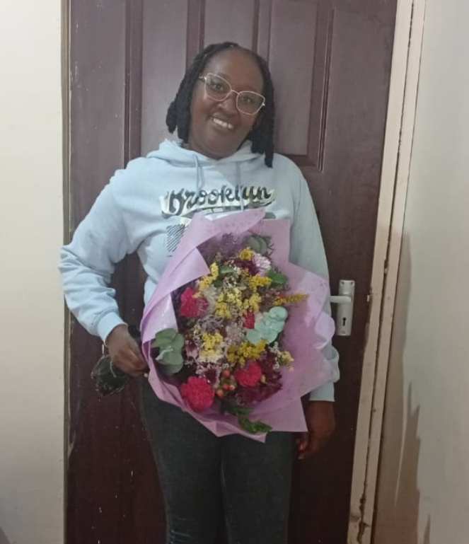
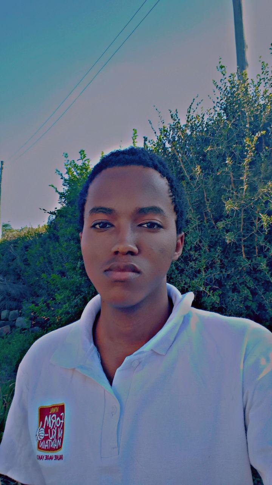
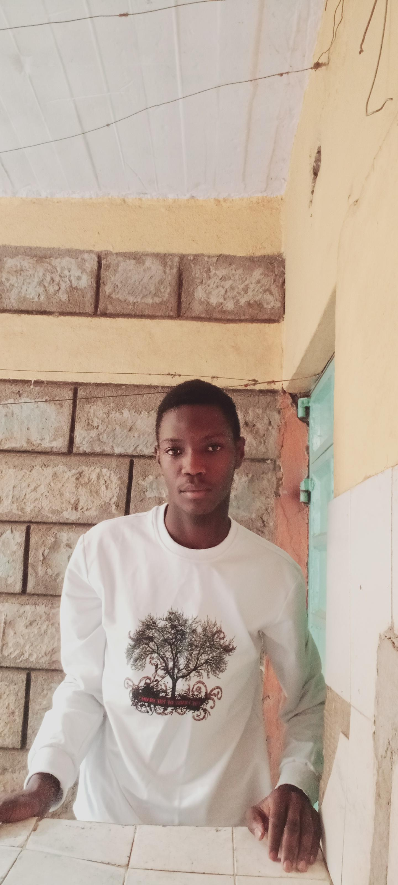

For four incredible years, your guidance, support, and mentorship have shaped who we are. Before we move on, we want to thank you. We have put together a special gift for you...
CLASS OF 2022 - 2025
"Thank you so much, Teacher, for these past four years and for always seeing my potential. Your belief that I could do better truly paid off in the end. I could not have done it without you. Please also receive this sincere appreciation from the PA Representative.✨"
"Dear Madam Beatrice, I would like to thank you for the four years you have been my class teacher and Kiswahili teacher. I appreciate the dedication of you never giving up on us. May the lord bless you and give you more wins 🥂. Thank you and God bless your work."

"Thank you for giving me a shot at leadership and for believing in us when everything seemed bleak. I am so grateful for the motherly love and nourishment you gave, even during the times we made you angry. Our success is truly indebted to you. I hope we live up to your expectations and make you incredibly proud! 🎓🌟"
"I would like to sincerely thank you for the guidance, patience and dedication you showed us throughout our time in your class. 🥰 You were so committed to not only teaching but also shaping our character. Rest assured I will not forget all the life advice you instilled on us 😌. Thank you for your support through the four years of high school 😊. Thanks for being more than just a teacher to us. You were also a mentor, a source of motivation and most importantly you were like a mother to us ☺️. Feel appreciated 🥰"

"Four years ago, I entered the great Baricho not knowing what it offered or what it had in store for me. Through my four years, you have taught me Kiswahili, made me love the subject, given me advice, and stood by me in every possible way a mother stands by her son. You made me rethink my every move and, above all, made me believe in myself. I am short of words of gratitude, but you have produced a man for society—a son that will make you proud. Thank you, Madam Beatrice, for all you’ve done for me. ASANTE SANA. ❤️❤️💝"
"To Madam Beatrice, All I want to say is thank you for being there for us during these four years of our lives as 4M. I know it was very difficult for you to cope with us since we were quite stubborn, but we always looked up to you because you bore with us until the very end, and that makes me so glad. Thank you for giving us such good advice about the life ahead and for the memories we shared together as a class—both the good and the bad—which I will never forget. You will always be a mother to me, even as we move on, and I will always pray for God to shower you with blessings in everything you do in your life. 🙏✨ I will be grateful again and again, and I will never stop thanking you."
"Hi Madam Beatrice, It has been long, but we are doing alright out here. Yes, it is a bit hard, but that’s just how life is. I know we are more than ready to pass through the challenges it has ready for us. 💪 I am writing this message as an appreciation of how much you have been a caring mother to us since you picked us up in Form One, when you barely even knew us. You took us through the journey of high school up to Form Four to complete our studies and achieve the best grades we could. 📚✨ I know the journey wasn’t a smooth ride; it had its ups and downs, but that’s what made that life thrilling. Every single day, no matter how angry we would make you, you still chose us, stood with us, and believed in us until the very end. ❤️ I sincerely wouldn’t ask for a better class teacher than you. Your legacy as our high school mum will always live in us. Thank you for everything you did for us; your hard work truly paid off. 🎓🙌"
"Dearest Madam Beatrice, As I look back on these four years, I realize that I entered Baricho as a boy and, because of you, I am leaving as a man. I want to thank you from the bottom of my heart for being so much more than just a class teacher. You were my guide, my mentor, and truly a mother to me when I needed one most. I will never forget how you stood by me during my most difficult times. Even when I had a case and things felt heavy, you didn't turn your back on me. Instead, you chose to believe in me when it felt like no one else did. You saw the best in me even when I couldn't see it in myself, and your constant encouragement was the fuel that kept me going. ⚓❤️ Thank you for your patience, your correction, and your unwavering faith in my potential. You taught me that my mistakes do not define me, but how I rise from them does. I am so lucky to have had a "high school mum" who fought for me and pushed me to reach for the best. I promise to carry the values you instilled in me and to make you proud in everything I do next. Your legacy doesn’t just stay at Baricho; it lives on in me. 🎓🌟"